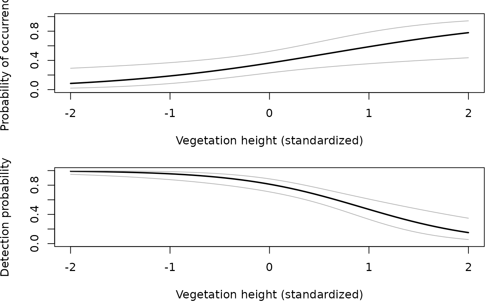
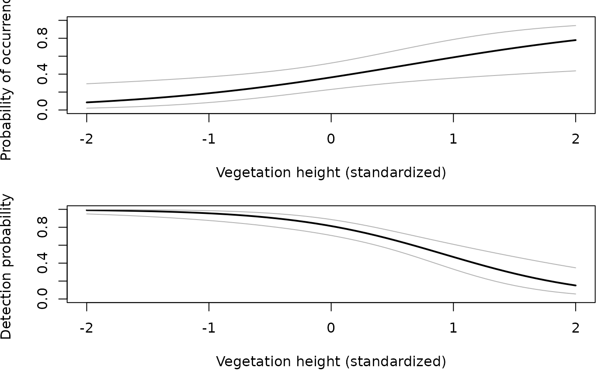

Models for Data from Unmarked Animals
unmarked-package.RdFits hierarchical models of animal occurrence and abundance to data collected on species that may be detected imperfectly. Models include single- and multi-season site occupancy models, binomial N-mixture models, and multinomial N-mixture models. The data can arise from survey methods such as occurrence sampling, temporally replicated counts, removal sampling, double observer sampling, and distance sampling. Parameters governing the state and observation processes can be modeled as functions of covariates. General treatment of these models can be found in MacKenzie et al. (2006) and Royle and Dorazio (2008). The primary reference for the package is Fiske and Chandler (2011).
Details
Overview of Model-fitting Functions:
occu fits occurrence models with no linkage between
abundance and detection (MacKenzie et al. 2002).
occuRN fits abundance models to presence/absence data by
exploiting the link between detection probability and abundance (Royle and
Nichols 2003).
occuFP fits occupancy models to data characterized by
false negatives and false positive detections (e.g., Royle and Link
[2006] and Miller et al. [2011]).
occuMulti fits multi-species occupancy model of Rota et
al. [2016].
colext fits the mutli-season occupancy model of
MacKenzie et al. (2003).
pcount fits N-mixture models (aka binomial mixture models) to
repeated count data (Royle 2004a, Kery et al 2005).
distsamp fits the distance sampling model of
Royle et al. (2004) to distance data recorded in discrete intervals.
gdistsamp fits the generalized distance sampling model
described by Chandler et al. (2011) to distance data recorded in
discrete intervals.
gpcount fits the generalized N-mixture model
described by Chandler et al. (2011) to repeated count data collected
using the robust design.
multinomPois fits the multinomial-Poisson model of Royle (2004b)
to data collected using methods such as removal sampling or double observer
sampling.
gmultmix fits a generalized form of the multinomial-mixture model
of Royle (2004b) that allows for estimating availability and detection
probability.
pcountOpen fits the open population model of Dail and
Madsen (2011) to repeated count data. This is a genearlized form of the
Royle (2004a) N-mixture model that includes parameters for recruitment
and apparent survival.
Data: All data are passed to unmarked's estimation functions as
a formal S4 class called an unmarkedFrame, which has child classes
for each model type. This allows metadata (eg as distance interval cut
points, measurement units, etc...) to be stored with the response and
covariate data. See unmarkedFrame for a detailed
description of unmarkedFrames and how to create them.
Model Specification: unmarked's
model-fitting functions allow specification of covariates for both the
state process and the detection process. For two-level hierarchical
models, (eg occu, occuRN, pcount,
multinomPois, distsamp) covariates for the
detection process (at the site or observation level) and the state
process (at the site level) are specified with a double right-hand sided
formula, in that order. Such a formula looks like
\(~ x1 + x2 + \ldots + x_n ~ x_1 + x_2 + \ldots + x_n\)
where \(x_1\) through \(x_n\) are additive covariates of
the process of interest. Using two tildes in a single formula
differs from standard R convention, but it is informative about the model
being fit. The meaning of these covariates, or what they
model, is full described in the help files for the individual functions
and is not the same for all functions. For models with more than two
processes (eg colext, gmultmix,
pcountOpen), single right-hand sided formulas (only one
tilde) are used to model each parameter.
Utility Functions: unmarked contains several utility
functions for organizing data into the form required by its model-fitting
functions. csvToUMF converts an appropriately
formated comma-separated values (.csv) file to a list containing the
components required by model-fitting functions.
References
Chandler, R. B., J. A. Royle, and D. I. King. 2011. Inference about density and temporary emigration in unmarked populations. Ecology 92:1429-1435.
Dail, D. and L. Madsen. 2011. Models for estimating abundance from repeated counts of an open metapopulation. Biometrics 67:577-587.
Fiske, I. and R. B. Chandler. 2011. unmarked: An R package for fitting hierarchical models of wildlife occurrence and abundance. Journal of Statistical Software 43:1–23.
Kery, M., Royle, J. A., and Schmid, H. 2005 Modeling avian abundance from replicated counts using binomial mixture models. Ecological Applications 15:1450–1461.
MacKenzie, D. I., J. D. Nichols, G. B. Lachman, S. Droege, J. A. Royle, and C. A. Langtimm. 2002. Estimating site occupancy rates when detection probabilities are less than one. Ecology 83: 2248–2255.
MacKenzie, D. I., J. D. Nichols, J. E. Hines, M. G. Knutson, and A. B. Franklin. 2003. Estimating site occupancy, colonization, and local extinction when a species is detected imperfectly. Ecology 84:2200–2207.
MacKenzie, D. I., J. D. Nichols, J. A. Royle, K. H. Pollock, L. L. Bailey, and J. E. Hines. 2006. Occupancy Estimation and Modeling. Amsterdam: Academic Press.
Miller, D.A., J.D. Nichols, B.T. McClintock, E.H.C. Grant, L.L. Bailey, and L.A. Weir. 2011. Improving occupancy estimation when two types of observational error occur: non-detection and species misidentification. Ecology 92:1422-1428.
Rota, C.T., et al. 2016. A multi-species occupancy model for two or more interacting species. Methods in Ecology and Evolution 7: 1164-1173.
Royle, J. A. 2004a. N-Mixture models for estimating population size from spatially replicated counts. Biometrics 60:108–105.
Royle, J. A. 2004b. Generalized estimators of avian abundance from count survey data. Animal Biodiversity and Conservation 27:375–386.
Royle, J. A., D. K. Dawson, and S. Bates. 2004. Modeling abundance effects in distance sampling. Ecology 85:1591–1597.
Royle, J. A., and R. M. Dorazio. 2006. Hierarchical models of animal abundance and occurrence. Journal Of Agricultural Biological And Environmental Statistics 11:249–263.
Royle, J.A., and W.A. Link. 2006. Generalized site occupancy models allowing for false positive and false negative errors. Ecology 87:835-841.
Royle, J. A. and R. M. Dorazio. 2008. Hierarchical Modeling and Inference in Ecology. Academic Press.
Royle, J. A. and J. D. Nichols. 2003. Estimating Abundance from Repeated Presence-Absence Data or Point Counts. Ecology, 84:777–790.
Sillett, S. and Chandler, R.B. and Royle, J.A. and Kery, M. and Morrison, S.A. In Press. Hierarchical distance sampling models to estimate population size and habitat-specific abundance of an island endemic. Ecological Applications
Examples
## An example site-occupancy analysis
# Simulate occupancy data
set.seed(344)
nSites <- 100
nReps <- 5
covariates <- data.frame(veght=rnorm(nSites),
habitat=factor(c(rep('A', 50), rep('B', 50))))
psipars <- c(-1, 1, -1)
ppars <- c(1, -1, 0)
X <- model.matrix(~veght+habitat, covariates) # design matrix
psi <- plogis(X %*% psipars)
p <- plogis(X %*% ppars)
y <- matrix(NA, nSites, nReps)
z <- rbinom(nSites, 1, psi) # true occupancy state
for(i in 1:nSites) {
y[i,] <- rbinom(nReps, 1, z[i]*p[i])
}
# Organize data and look at it
umf <- unmarkedFrameOccu(y = y, siteCovs = covariates)
head(umf)
#> Data frame representation of unmarkedFrame object.
#> y.1 y.2 y.3 y.4 y.5 veght habitat
#> 1 0 0 0 0 1 1.0733096 A
#> 2 0 0 0 0 0 3.3024986 A
#> 3 0 0 0 0 0 -0.7308712 A
#> 4 0 0 0 0 0 1.1855582 A
#> 5 1 1 1 1 1 0.3037686 A
#> 6 0 1 1 1 1 0.3758026 A
#> 7 0 0 0 0 0 -1.0129665 A
#> [ reached 'max' / getOption("max.print") -- omitted 3 rows ]
summary(umf)
#> unmarkedFrame Object
#>
#> 100 sites
#> Maximum number of observations per site: 5
#> Mean number of observations per site: 5
#> Sites with at least one detection: 25
#>
#> Tabulation of y observations:
#> 0 1
#> 415 85
#>
#> Site-level covariates:
#> veght habitat
#> Min. :-1.80746 A:50
#> 1st Qu.:-0.75747 B:50
#> Median :-0.05057
#> Mean : 0.07205
#> 3rd Qu.: 0.62237
#> Max. : 3.32295
# Fit some models
fm1 <- occu(~1 ~1, umf)
fm2 <- occu(~veght+habitat ~veght+habitat, umf)
fm3 <- occu(~veght ~veght+habitat, umf)
# Model selection
fms <- fitList(m1=fm1, m2=fm2, m3=fm3)
modSel(fms)
#> nPars AIC delta AICwt cumltvWt
#> m3 5 244.81 0.00 6.1e-01 0.61
#> m2 6 245.68 0.87 3.9e-01 1.00
#> m1 2 273.01 28.20 4.6e-07 1.00
# Empirical Bayes estimates of the number of sites occupied
sum(bup(ranef(fm3), stat="mode")) # Sum of posterior modes
#> [1] 29
sum(z) # Actual
#> [1] 29
# Model-averaged prediction and plots
# psi in each habitat type
newdata1 <- data.frame(habitat=c('A', 'B'), veght=0)
Epsi1 <- predict(fms, type="state", newdata=newdata1)
with(Epsi1, {
plot(1:2, Predicted, xaxt="n", xlim=c(0.5, 2.5), ylim=c(0, 0.5),
xlab="Habitat",
ylab=expression(paste("Probability of occurrence (", psi, ")")),
cex.lab=1.2,
pch=16, cex=1.5)
axis(1, 1:2, c('A', 'B'))
arrows(1:2, Predicted-SE, 1:2, Predicted+SE, angle=90, code=3, length=0.05)
})
 # psi and p as functions of vegetation height
newdata2 <- data.frame(habitat=factor('A', levels=c('A','B')),
veght=seq(-2, 2, length=50))
Epsi2 <- predict(fms, type="state", newdata=newdata2, appendData=TRUE)
Ep <- predict(fms, type="det", newdata=newdata2, appendData=TRUE)
op <- par(mfrow=c(2, 1), mai=c(0.9, 0.8, 0.2, 0.2))
plot(Predicted~veght, Epsi2, type="l", lwd=2, ylim=c(0,1),
xlab="Vegetation height (standardized)",
ylab=expression(paste("Probability of occurrence (", psi, ")")))
lines(lower ~ veght, Epsi2, col=gray(0.7))
lines(upper ~ veght, Epsi2, col=gray(0.7))
plot(Predicted~veght, Ep, type="l", lwd=2, ylim=c(0,1),
xlab="Vegetation height (standardized)",
ylab=expression(paste("Detection probability (", italic(p), ")")))
lines(lower~veght, Ep, col=gray(0.7))
lines(upper~veght, Ep, col=gray(0.7))

par(op)
# psi and p as functions of vegetation height
newdata2 <- data.frame(habitat=factor('A', levels=c('A','B')),
veght=seq(-2, 2, length=50))
Epsi2 <- predict(fms, type="state", newdata=newdata2, appendData=TRUE)
Ep <- predict(fms, type="det", newdata=newdata2, appendData=TRUE)
op <- par(mfrow=c(2, 1), mai=c(0.9, 0.8, 0.2, 0.2))
plot(Predicted~veght, Epsi2, type="l", lwd=2, ylim=c(0,1),
xlab="Vegetation height (standardized)",
ylab=expression(paste("Probability of occurrence (", psi, ")")))
lines(lower ~ veght, Epsi2, col=gray(0.7))
lines(upper ~ veght, Epsi2, col=gray(0.7))
plot(Predicted~veght, Ep, type="l", lwd=2, ylim=c(0,1),
xlab="Vegetation height (standardized)",
ylab=expression(paste("Detection probability (", italic(p), ")")))
lines(lower~veght, Ep, col=gray(0.7))
lines(upper~veght, Ep, col=gray(0.7))

par(op)